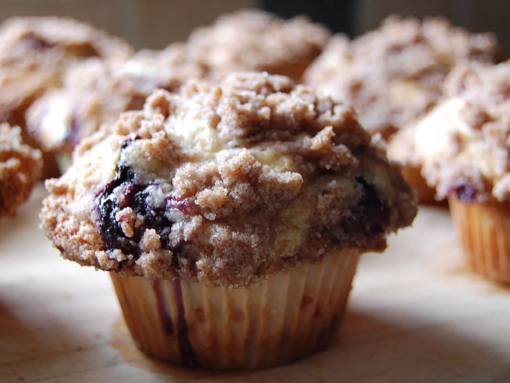

Blueberry Muffin

This blueberry muffin recipe is moist, sweet, and bursting with fruity flavor.
A buttery streusel topping takes this indulgent breakfast over the top.
This blueberry muffin recipe makes eight extra large and yummy
breakfast muffins with a sugary-cinnamon crumb topping.
I usually double the recipe and fill the muffin cups just to the top for a wonderful,
extra-generously-sized, deli-style muffin. Add extra blueberries if you want!
Muffin Ingredients
- all-purpose flour
- white sugar
- baking powder
- salt
- vegetable oil
- 1 egg
- milk
- fresh blueberries
Topping Ingredients
- white sugar
- all-purpose flour
- butter
- cinammon
Back to Home